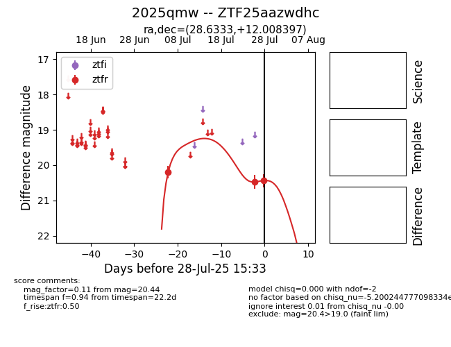

Target 2025qmw at 2025-07-28 15:33, see:
FINK: fink-portal.org/2025qmw
Lasair: lasair-ztf.lsst.ac.uk/objects/2025qmw
ALeRCE: alerce.online/object/2025qmw
TNS: wis-tns.org/object/2025qmw
YSE: ziggy.ucolick.org/yse/transient_detail/2025qmw
alt names
ZTF25aazwdhc (ztf,fink)
2025qmw (tns,yse)
coordinates:
equatorial (ra, dec) = (28.6333,+12.00840)
galactic (l, b) = (146.3340,-47.97575)
photometry
last ztfr=20.44
3 ztfr detections
